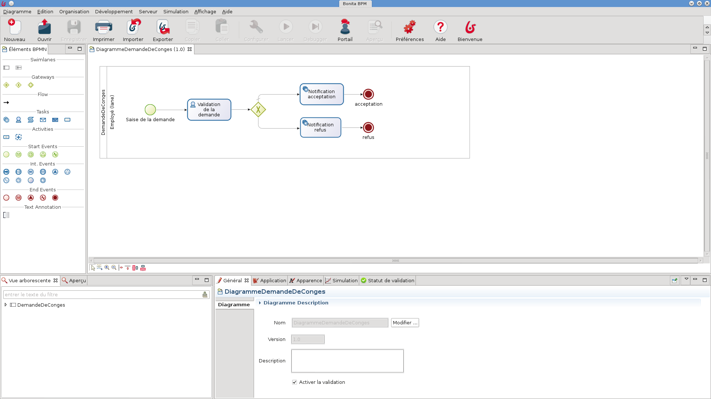
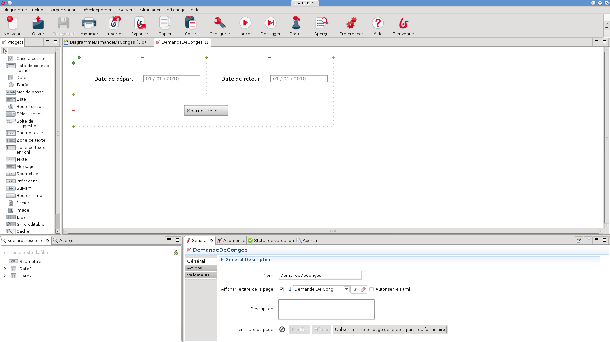
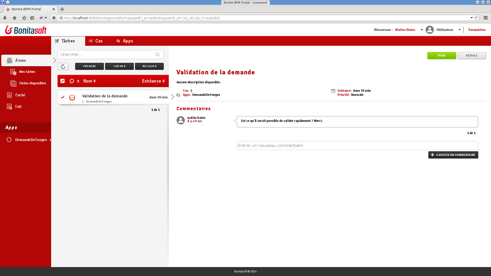

Initiation technique à Bonita BPM
Objectifs du BPM
Collaborer à la définition et l'exécution des processus de l'entreprise
Suivre le bon déroulement des processus
Optimiser les processus
Les composants de Bonita BPM
- Bonita Studio
- Bonita Platform
- Bonita Engine
- Bonita Portal
Bonita BPM Studio : edition de diagrammes

Bonita BPM Studio : edition de formulaires

Bonita BPM Engine
Le moteur responsable de l'exécution des processus
Basé sur un ensemble de technologie du monde Java :
- Java SE 7
- JDBC
- Java EE 6 : JSP, Servlet, JTA
Packagé avec le Portal dans une application web (WAR ou EAR)
Bonita BPM Portal
L'interface web pour l'utilisateur final et l'administrateur
Présente la liste des tâches à réaliser

Permet de déployer et configurer des processus
Introduction au BPMN
Une notation standard (OMG) pour la modélisation des processus
Les éléments essentiels :
- Start event
- User task (<=> Human task)
- Service task
Exercice 1
Première étape de la modélisation d'un processus
Gestion des données : scope
3 types de visibilité sont disponible :
- Processus
- Étape
- Formulaire
Gestion des données : persitence et types
Les données sont sauvegardées dans la base de données associée au moteur à l'exception des données transientes d'étapes
Tout type d'objet Java peut être utilisé
Les types autres que les types primitifs et String sont sérialisés pour être persistés
Exercice 2
Ajout de données et utilisation des formulaires auto-générés
Introduction au BPMN 2nde partie
Trois type de portes logiques :
- Exclusive
- Parallèle
- Inclusive
Exercice 3
Porte logique exclusive pour orienté le flux du processus en fonction des données
Formulaires
Deux types :
Ensemble de widgets placés sur une grille
Widgets
Les widgets dispose d'un ensemble de paramètres de configuration :
- Nom (id) et libellé
- Aide, info-bulle, example
- Valeur disponibles, valeur initale
- Opération de sortie
- Insertion conditionnelle, obligatoire, lecture seule...
- Validation des données saisies
Exercice 4
Création de formulaires : démarrage de cas et étape
Acteurs
Deux grandes options :
- Acteur : association entre la définition du processus et l'organisation
- Filtre d'acteur : logique exécutée au moment où la tâche deviens disponible
Exercice 5
Utilisation de l'acteur par défaut et d'un filtre d'acteur
Connecteurs
Connecter une definition de processus vers le SI
A l'opposer les API (REST / Java) permettent au SI d'intéragir avec les processus
Un catalogue standard de connecteur est disponible. Il est possible de créer ses propres connecteurs
- Un connecteur est composé d'une définition (interface Java) et d'une implémentation (class Java)
- Interface définie les paramètres d'entrée et de sortie
- Implémentation définie la logique métier
Exercice 6
Utiliser un connecteur pour envoyer un email
Déploiement
Étapes principales du déploiement d'un processus :
- Configuration du processus dans le Studio
- Génération du fichier .bar
- Déploiement du .bar en utilisant le Portal
- Configuration du processus après déploiement
- Activation du processus